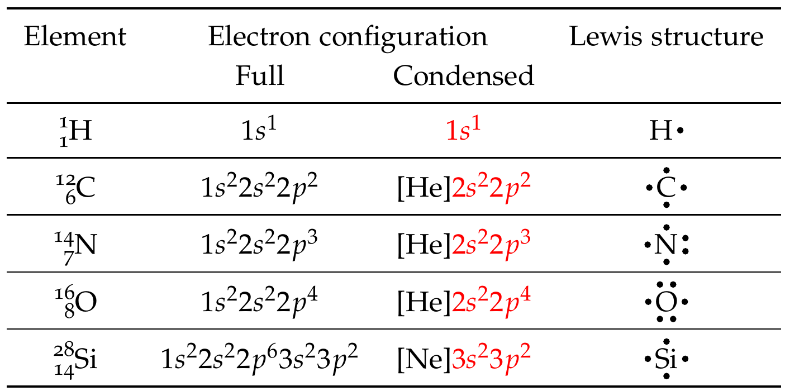
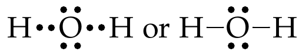
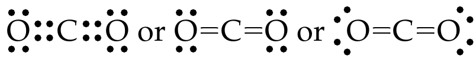
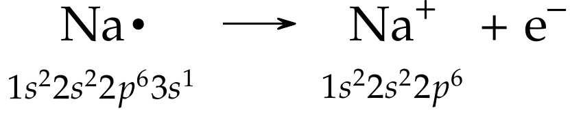
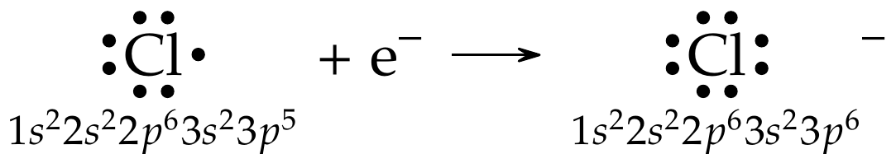
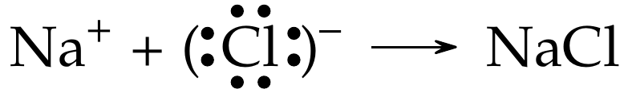
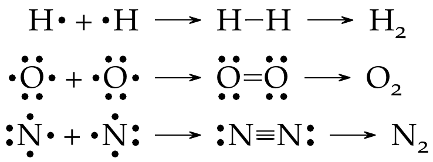

1.3 Chemical Bonding#
Lewis Dots and Structures#
In nature, atoms of most elements (except noble gases) do not exist independently. They are bound to other atoms in molecules, crystals, or ions. At center of this binding is the transfer or sharing of electrons, or through electrostatic forces arising from uneven distribution of charge in atoms and molecules. The most important understanding we gain from understanding the periodic table is why some elements combine in specific way to form compounds. Chemical bonds refer to attraction between atoms of specific elements allowing the formation of chemical compounds.
There are different types of chemical bonds and the specific type depends on where these elements come from in the periodic table. In this section, we explore different ways atoms bond.
Lewis Dot Symbols#
It is the valence electrons that interact when atoms form compounds. Lewis dot symbols are helpful for depicting the valence electrons of the atoms involved. Each dot surrounding the symbol of an element represents a a valence electron. Note that this representation is only used for main group elements (Groups 1, 2, and 13-18) as the transition elements have incomplete inner shells.
Fig. 16 Lewis dot symbols illustrating the number of valence electrons for each element in the third period of the periodic table. Image source: 4.4 Lewis Symbols and Structures - Chemistry: Atoms First | OpenStax#
Rules for Lewis dot symbols
A maximum of 8 dots can be placed around an element’s symbol, representing maximum of 8 electrons in the valence shells (main group elements).
All noble gases have 8 dots each, except for \(\ce{He}\), which has 2 dots.
Dots can be placed above, below, left, and right of element symbol. A maximum of two dots are placed on each side of the symbol.
Exact order in which dots are placed are not important.
Each side can have a maximum of two dots, they are not paired until all sides have one dot each.
In addition to atoms, ions can also be represented using Lewis dot symbols - just add or remove appropriate number of dots from the Lewis dot symbol of the atom and include the ion’s charge.
Example: Lewis dot symbols
Let’s write Lewis dot symbols of some common elements involved in covalent bonding – \(\ce{H}\), \(\ce{C}\), \(\ce{N}\), \(\ce{O}\), and \(\ce{Si}\). First, start by writing out the electron configuration of the element. Then, identify the valence shells in the table. Then proceed to applying Lewis dot symbol rules outlined above.

Fig. 17 shows Lewis dot symbols for the main group elements shows Lewis dot symbols for the main group elements in the periodic table. We can glean from this if the main group elements are likely to lose electrons (groups 1, 2, 13, and 14) and share or gain electrons (groups 14-17).
Fig. 17 Cations are formed when atoms lose electrons, represented by fewer Lewis dots, whereas anions are formed by atoms gaining electrons. The total number of electrons does not change. Image source: 4.4 Lewis Symbols and Structures - Chemistry: Atoms First | OpenStax#
The Octet Rule#
The octet rule is used as the basis for determining how atoms bond. This rule is derived from Lewis’ theory of chemical bonding. This rule states that atoms will lose, gain, or share electrons to achieve a noble gas electron configuration – for nearly all elements this would result in eight (and hence the name octet rule) valence electrons around each atom. We can predict many of the formulas for compounds that are made of specific elements. An atom achieves an octet by losing, gaining, or sharing electrons depending on the number of subatomic particles within the atom.
In chemical bonding only the valence electrons are involved in bonding. Consider the \(\ce{Cl2}\) molecule. The electron configuration of \(\ce{Cl}\) is \([\ce{Ne}]3s^2 3p^5\). The electrons in \(1s,\ 2s,\ \&\ 2p\) subshells are close to the nucleus and, hence, do not participate in bond formation. However, the 7 valence electrons in \(3s\ \&\ 3p\) subshells are valence electrons and hence, participate in chemical bonding.) When there are 8 dots present around an atom, it is said to have achieved the octet or is isoelectronic with the noble gases.
Fig. 18 The chlorine atom shows 7 valence electrons and upon accepting an additional electron to achieve the octet, it becomes negatively charged chloride ion (\(\ce{Cl-}\)).#
The \(\ce{Cl2}\) molecule formation can be represented using Lewis dot symbols. As seen in the equation below the two lone electrons in each \(\ce{Cl}\) atoms pair up to create an octet for each \(\ce{Cl}\) atom. The result is formation of a chemical bond (covalent bond). The remaining, nonbonding, electrons are called lone pairs. In the reaction below, each \(\ce{Cl}\) atom has three lone pairs of electrons, which do not participate in chemical bonding under normal conditions.
Lewis Structures#
Lewis structures are a very useful way of improving our understanding of valence electrons and their role in chemical bonding. Representing atoms using Lewis dot symbols (Fig. 17) helps us gain a better understanding of the role valence electrons play in various electron interactions (chemical bonding).
Lewis structures are used to represent covalent bonding in which shared electron pairs are shown either as dashes or as pairs of dots between two atoms, and lone pairs are shown as pairs of dots on individual atoms. As before, only valence electrons are shown in a Lewis dot symbols and structures.
Example: Lewis structure of water molecule
Let’s draw the Lewis structure of \(\ce{H2O}\) molecule
As shown in Fig. 16, write Lewis dot symbols of \(\ce{H}\) and \(\ce{O}\) atoms
As per the octet rule, \(\ce{H}\) needs one electron to achieve \(\ce{He}\) electron configuration, while \(\ce{O}\) needs two electrons to achieve Ne electron configuration.
Let’s put the two \(\ce{H}\)atoms on either side of the \(\ce{O}\) atom:
When these atoms approach, valence shells reorganize and share electrons.
Sharing valence electrons led to \(\ce{H}\) and \(\ce{O}\) completing the octet rule and formation of a covalent bond.

In the above example only one pair of electrons were shared leading to a single bond. When two or more pairs of electrons are shared, multiple bonds are formed. Two shared pairs of electrons result in a double bond and three shared pairs result in a triple bond.
Example: Lewis structure of \(\ce{CO2}\) molecule
Let’s draw the Lewis structure of \(\ce{CO2}\) molecule.
As shown in Fig. 16, write Lewis dot symbols of \(\ce{C}\) and \(\ce{O}\) atoms
As per the octet rule, \(\ce{C}\) needs four electrons and \(\ce{O}\) needs two electrons to achieve \(\ce{Ne}\) electron configuration. \(\ce{C}\) shares a pair of electrons each with each \(\ce{O}\) atom.
Let’s put the two \(\ce{O}\) atoms on either side of the \(\ce{C}\) atom:
When these atoms approach, valence shells reorganize and share electrons.
The above shared pairs of electrons can be shown as

Multiple bonds are shorter and stronger than single bonds. Bond length measured in \(\pu{pm}\) (\(=\pu{e-12 m}\)) or \(\pu{Å}\) (\(=\pu{e-10 m}\)), is defined as the distance between nuclei of two covalently bonded atoms in a molecule. Because multiple bonds involve sharing of multiple pairs of electrons and force nuclei to be closer, it requires greater energy to break these bonds. The bond energy is defined as the energy change associated with breaking one mole of bonds and is measured in \(\pu{kJ mol-1}\). See Table 4 for average bond energies and bond lengths of common chemical bonds.
Bond |
Bond energy |
Bond length |
|---|---|---|
\(\pu{kJ mol-1}\) |
\(\pu{pm}\) |
|
\(\ce{H-H}\) |
\(436\) |
\(74\) |
\(\ce{C-H}\) |
\(414\) |
\(107\) |
\(\ce{O-H}\) |
\(464\) |
\(96\) |
\(\ce{C-C}\) |
\(347\) |
\(154\) |
\(\ce{C=C}\) |
\(611\) |
\(133\) |
\(\ce{C#C}\) |
\(837\) |
\(120\) |
\(\ce{C-O}\) |
\(351\) |
\(143\) |
\(\ce{C=O}\) |
\(745\) |
\(121\) |
\(\ce{C=O}\) (in \(\ce{CO2}\)) |
\(803\) |
|
\(\ce{C#O}\) (in \(\ce{CO}\)) |
\(1075\) |
\(113\) |
\(\ce{O-O}\) |
\(130\) |
\(148\) |
\(\ce{O=O}\) (in \(\ce{O2}\)) |
\(498\) |
\(121\) |
Chemical Bonding#
Ionic Bonding#
Recall that atoms of elements with low IE, mostly metals, form cations. Also, atoms of elements with high EA, mostly nonmetals, form anions. The electrostatic attraction between the oppositely charged ions, cations and anions, cause them come together they form ionic compounds. This attraction is ionic bonding. Typically, cations are metals, while anions are nonmetals. Examine the following two reactions
Example: Formation of an ionic bond
Lets explore the formation of \(\ce{NaCl}\) salt.
(1) First, consider the formation of \(\ce{Na+}\). Since \(\ce{Na}\) is a group 1 metal and has one valence electron (and low ionization energy or IE), it can easily give away that valence electron (\(e^-\)) as shown below and forms a cation:

(2) Now, consider the formation of \(\ce{Cl-}\). \(\ce{Cl}\) is a group 17 nonmetal and has seven valence electrons, one away from an octet. Since \(\ce{Cl}\) (and group 17 elements) has high electron affinity (EA), it is very likely to attract an electron from a neighboring atom as shown below and forms an anion:

(3) When oppositely charged ions, such as \(\ce{Na+}\) and \(\ce{Cl-}\), come together, they are electrostatically attracted and the resulting reaction is shown below:

(4) The resulting ionic compound is electrically neutral or the overall charge on the compound is \(0\).
(5) The figure below shows the solid \(\ce{NaCl}\) lattice in a halite crystal. Each \(\ce{Na+}\) is surrounded by 6 \(\ce{Cl-}\) and vice versa.
Image source: 4.1 Ionic Bonding - Chemistry: Atoms First | OpenStax
Cations of main group metals (Groups 1, 2, etc.) are referred to by name of the element followed by ion. For example, \(\ce{Na+}\), \(\ce{Mg^2+}\), and \(\ce{Al^3+}\) are called sodium ion, magnesium ion and aluminum ion, respectively. The charge is not ambiguous and is not necessary to be mentioned for these main group metals. However, certain metals including the transition metals, multiple charges are possible due to multiple partially filled valence shells. For example, \(\ce{Fe^2+}\) and \(\ce{Fe^3+}\) can be called ferrous ion and ferric ion, respectively, or \(\ce{Fe(II)}\) ion (iron TWO ion) and \(\ce{Fe(III)}\) ion (iron THREE ion) respectively.
Monoatomic anions are named by changing the ending of the element name with -ide followed by ion. For example, \(\ce{Cl^-}\), \(\ce{C^4-}\), \(\ce{N^3-}\), and \(\ce{O^2-}\) are called chloride, carbide, nitride, and oxide ions, respectively. Naming polyatomic anions such as \(\ce{SO4^2-}\) (sulfate), \(\ce{CO3^2-}\) (carbonate), and \(\ce{NO3-}\) (nitrate) is more complex.
Formulas of ionic compounds reflect the charges of anion and cation that make up the cation and anion in the smallest possible whole number. The sum of all charges should add up to a \(0\) for electroneutrality. E.g., \(\ce{Al^3+}\) and \(\ce{O^2-}\) combine to form \(\ce{Al2O3}\).
Covalent Bonding#
In ionic compounds, the elements involved have extreme differences in their ionization energy and electron affinities. However, when elements with more similar properties come together, electrons are not transferred from one element to another but instead are shared to give each atom a noble gas electron configuration. Gilbert Lewis first suggested that a chemical bond involves atoms sharing electrons, and this approach is known as the Lewis theory of bonding.
This type of arrangement, where electrons are shared is called covalent bonding. This sharing allows to attain a full outer shell or a more stable electronic configuration.
Example: Covalent bonding
In the reactions below, we can see atoms of same element share valence electrons to form covalent bonds.

In each case, a different type of bond is shown. Note that all atoms now have 2 or 8 electrons in their valence shell.
In each case, a different type of bond is shown. Note that all atoms now have 2 or 8 electrons in their valence shell.
The end product of a covalent bond is formation of a molecule (\(\ce{H2}\), \(\ce{O2}\), and \(\ce{N2}\) in above example). A molecule can be defined as a neutral combination of at least two atoms in a specific arrangement held together by a chemical bond or other forces. Also, in the above example, each type of bond is referred to its bond order, which refers to number of pairs of electrons shared by two atoms. Covalent bonds are very strong, however, the higher bond orders are stronger (see Table 4). Likewise, stronger bonds lead to shorter bond lengths.
Example: Bond order
As seen from previous example, the bond order of \(\ce{H2}\), \(\ce{O2}\), and \(\ce{N2}\) is one, two, and three, respectively.
The ideal covalent and ionic bonds represent the extremes of a spectrum: most bonds are neither completely covalent nor completely ionic. In these intermediate cases, the bonding electrons will spend most, but not all, of their time associated with one atom or another. Electronegativity is useful in describing the degree of ionicity of a bond: a bond is considered ionic when the difference in the electronegativity of the two atoms involved in the chemical bond is greater than two (Fig. 19). In Fig. 15, we see that metals (generally those elements on the left-hand side of the periodic table) tend to have low electronegativities while the non-metals (those elements on the right) have high electronegativities. Thus bonds between metals and nonmetals (e.g., \(\ce{NaCl}\) will be ionic while those between non-metals (e.g., \(\ce{CO2}\) will be covalent, as will bonds between two like atoms (e.g., \(\ce{O2}\)).
Polar and nonpolar covalent bonds
To determine if a bond is polar or nonpolar covalent bond, examine the difference in electronegativities between the atoms involved in the bond.
\(\Delta\) EN |
Type of Bond |
|---|---|
\(<0.4\) |
Nonpolar covalent |
\(0.4-1.8\) |
Polar covalent |
\(>1.8\) |
Ionic |
Polar covalent bonds also lead to asymmetric structure in molecules such as \(\ce{H2O}\) and \(\ce{CO2}\).
Fig. 19 As the electronegativity difference increases between two atoms, the bond becomes more ionic. Image source: 4.2 Covalent Bonding - Chemistry: Atoms First | OpenStax#
Because the electrons accumulate closer to the more electronegative atom in a bond, this atom has a partial negative charge (\(\delta-\)) while the other atom in the bond has a partial positive charge (\(\delta+\)). The small differences in the charge result in a dipole nature similar to that of a magnet. Because of the dipolar nature of these molecules, \(\delta-\) end of a molecule attracts the \(\delta+\) end of a neighboring molecule and vice versa. See Fig. 20 for an example.
Fig. 20 An example of dipole interactions between two polar molecules, such as as \(\ce{HCl}\), that allow an attraction between the partial negative end of one molecule and the partial positive end of another. Image source: 10.1 Intermolecular Forces - Chemistry: Atoms First | OpenStax#
Intermolecular Forces#
Dipole-dipole interactions occur between polar molecules discussed in the previous section (see example in Fig. 20). These interactions are a special class of intermolecular forces between partially charged molecules and are weaker than ionic or covalent bonds, but very important nonetheless. The attractive forces between opposite charges of the neighboring dipole molecules lead to these weak bonds. Collectively, these weak bonds are referred to as van der Waals forces.
Hydrogen Bonding#
Hydrogen bonding is a special type of dipole-dipole interaction. These only involve molecules that contain \(\ce{H}\) bonded to small, highly electronegative atoms, such as \(\ce{N}\), \(\ce{O}\), and \(\ce{F}\). The electron density is higher near the more electronegative atom resulting in the partial negative charge (\(\delta-\)), while \(\ce{H}\) develops a strong partial positive charge (\(\delta+\)), due to its size. The \(\delta+\) charge on \(\ce{H}\) is attracted to the \(\delta-\) charge on an adjacent dipole molecule (Fig. 21). This property play a very significant role in the chemistry of molecules.
Fig. 21 Water molecules participate in multiple hydrogen-bonding interactions with nearby water molecules. Image source: 10.1 Intermolecular Forces - Chemistry: Atoms First | OpenStax#
How polarity makes water behave strangely | TED-Ed
Molecular Geometry#
Valence bond theory and hybridization of valence shells can be used to describe bonding and structure of molecules such as water. The structure of \(\ce{H2O}\) molecules are asymmetrical as shown in Fig. 22.

Fig. 22 Molecular structure of water molecule. The polar covalent bonding result in a partial negative (\(\delta -\)) charge near oxygen atom and a partial positive (\(\delta +\)) charge near the hydrogen atoms. Image source: Properties of water - Wikipedia#
As observed in \(\ce{H2O}\) molecule, having the molecular formula alone is insufficient to predict the shape of a molecule. The actual shapes of molecules are determined experimentally, but these shapes can be predicted using the Lewis structures and models such as the valence-shell electron pair repulsion (VSEPR) model. According to VSEPR model, electron pairs in the valence shell of an atom repel each other. This repulsion forces these electrons to arrange themselves as far apart as possible, minimizing repulsive interactions between them. According to this model, the two lone pairs and the two single bonds arrange themselves in an tetrahedral form around the central \(\ce{O}\) atom. The resulting bond angle would then be \(\pu{109.5 ^\circ}\). However, the nonbonding electron pair effectively occupies greater space than a bonding pair of electrons. Consequently, the nonbonding pair repels the bonding pairs somewhat more strongly than the bonding pairs repel one another. This stronger repulsion forces the bonding pairs closer to one another, creating an \(\ce{H–O–H}\) angle to \(\pu{104.5 ^\circ}\) which slightly less than the predicted \(\pu{109.5 ^\circ}\). For more information, see 4.6 Molecular Structure and Polarity - Chemistry: Atoms First | OpenStax.